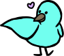
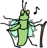
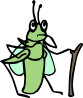

02: Chirp!
Ada and Brick make it down to the bank of the pond, where they see an elderly cricket singing at the edge of the water. Ada sings out to the cricket, calling its name.
Fiddler, old friend! Good to see you~
Fiddler turns around and chirps excitedly. Ada introduces Fiddler and Brick to each other.
Welcome back, Ada - I see you've brought over a friend, how exciting! Pleased to meet you!
Brick is amazed at both Fiddler's and Ada's chirping, and asks how they can both sing so well when they're so very different. Fiddler chuckles and then explains.
All Animals know how to call, but each one calls their friends in a different way. Insects use their wings like an instrument to buzz, while Birds use their beaks to sing!